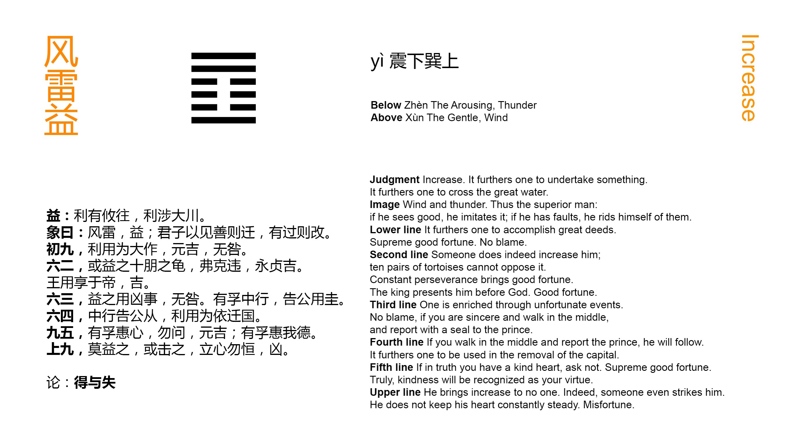

Chinese: 益 ䷩ yì

Yì ䷩ indicates that (in the state which it denotes) there will be advantage in every movement which shall be undertaken, that it will be advantageous (even) to cross the great stream.
1. The first NINE, undivided, shows that it will be advantageous for its subject in his position to make a great movement. If it be greatly fortunate, no blame will be imputed to him.
䷩ changing to ䷓
Matching Line 1 in Adjacent Hexagram: ䷨
2. The second SIX, divided, shows parties adding to the stores of its subject ten pairs of tortoise shells whose oracles cannot be opposed. Let him persevere in being firm and correct, and there will be good fortune. Let the king, (having the virtues thus distinguished), employ them in presenting his offerings to God, and there will be good fortune.
䷩ changing to ䷼
Matching Line 2 in Adjacent Hexagram: ䷨
3. The third SIX, divided, shows increase given to its subject by means of what is evil, so that he shall (be led to good), and be without blame. Let him be sincere and pursue the path of the Mean, (so shall he secure the recognition of the ruler, like) an officer who announces himself to his prince by the symbol of his rank.
䷩ changing to ䷤
Matching Line 3 in Adjacent Hexagram: ䷨
4. The fourth SIX, divided, shows its subject pursuing the due course. His advice to his prince is followed. He can with advantage be relied on in such a movement as that of removing the capital.
䷩ changing to ䷘
Matching Line 4 in Adjacent Hexagram: ䷨
5. The fifth NINE, undivided, shows its subject with sincere heart seeking to benefit (all below). There need be no question about it; the result will be great good fortune. (All below) will with sincere heart acknowledge his goodness.
䷩ changing to ䷚
Matching Line 5 in Adjacent Hexagram: ䷨
6. In the sixth NINE, undivided, we see one to whose increase none will contribute, while many will seek to assail him. He observes no regular rule in the ordering of his heart. There will be evil.
䷩ changing to ䷂
Matching Line 6 in Adjacent Hexagram: ䷨
Yì ䷩ has the opposite meaning to Sǔn ䷨, and is the symbol of addition or increasing. What king Wén had in his mind, in connexion with the hexagram, was a ruler or a government operating p. 151 so as to dispense benefits to, and increase the resources of all the people. Two indications are evident in the lines; -- the strong line in the ruler's seat, or the fifth line, and the weak line in the correlative place of 2. Whether there be other indications in the figure or its component trigrams will be considered in dealing with the Appendixes. The writer might well say, on general grounds, of the ruler whom he had in mind, that he would be successful in his enterprises and overcome the greatest difficulties.
Line 1 is strong, but its low position might seem to debar its subject from any great enterprise. Favoured as he is, however, according to the general idea of the hexagram, and specially responding to the proper correlate in 4, it is natural that he should make a movement; and great success will make his rashness be forgotten.
With paragraph 2 compare paragraph 5 of the preceding hexagram. Line 2 is weak, but in the centre, and is the correlate of 5. Friends give its subject the valuable gifts mentioned; 'that is,' says Guō Yōng (Sòng dynasty), 'men benefit him; the oracles of the divination are in his favour, -- spirits, that is, benefit him; and finally, when the king sacrifices to God, He accepts. Heaven confers benefit from above.'
Line 3 is weak, neither central, nor in its correct position. It would seem therefore that its subject should have no increase given to him. But it is the time for giving increase, and the idea of his receiving it by means of evil things is put into the line. That such things serve for reproof and correction is well known to Chinese moralists. But the paragraph goes on also to caution and admonish.
Line 4 is the place for a minister, near to that of the ruler. Its subject is weak, but his place is appropriate, and as he follows the p. 152 due course, his ruler will listen to him, and he will be a support in the most critical movements. Changing the capital from place to place was frequent in the feudal times of China. That of Shang, which preceded Zhōu, was changed five times.
Line 5 is strong, in its fitting position, and central. It is the seat of the ruler, who has his proper correlate in 2. Everything good, according to the conditions of the hexagram, therefore, may be said of him; -- as is done.
Line 6 is also strong; but it should be weak. Occupying the topmost place of the figure, its subject will concentrate his powers in the increase of himself, and not think of benefiting those below him; and the consequence will be as described.